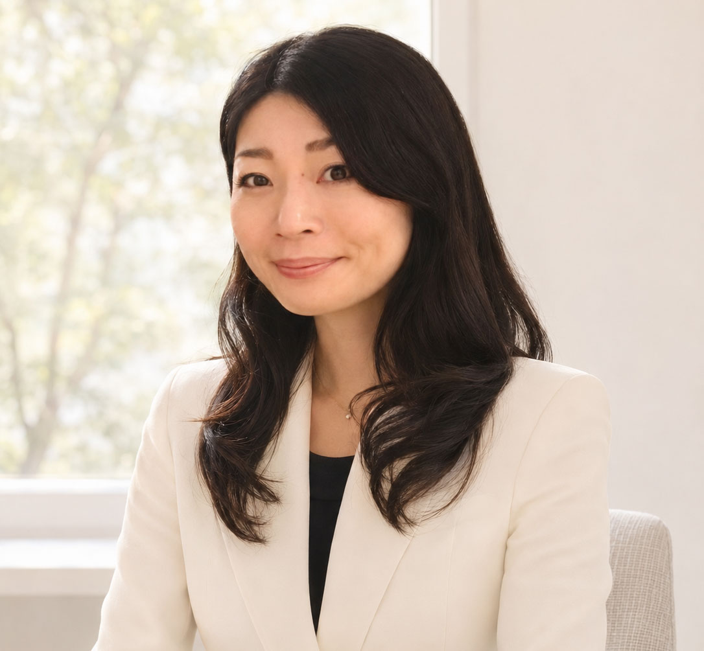
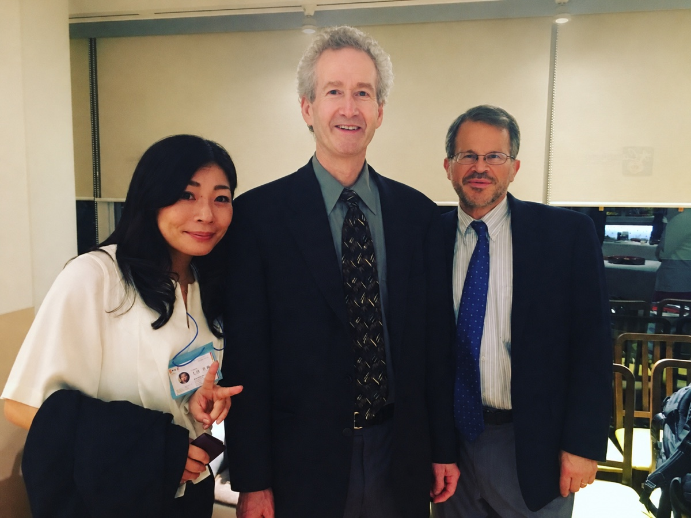
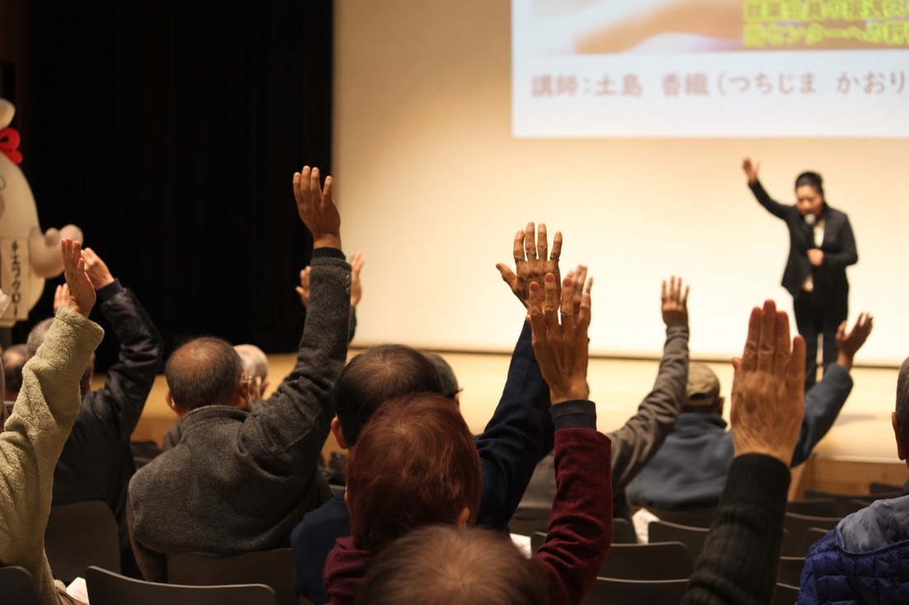

プロフィール
PROFILE
OUR REPRESENTATIVE
人と組織に向き合う。その経験を、次の一歩へ。
株式会社E-マネージ代表取締役
土島 香織
つちじま かおり
1978年 兵庫県生まれ
2009年に起業し、2015年に株式会社E-マネージを設立。人の想いと組織の課題に向き合い、制度づくりから人材育成までを支援しています。
人事コンサル支援企業実績100社以上

CAREER
経歴
- 2000年
- 広告出版メーカーに営業職として入社。初月から27か月連続で売上予算を達成し、新人特別賞を受賞。
- 2002年
- フリーマガジンの発刊プロジェクトメンバーとして黒字化に貢献。
- 2007年
- 法人向け研修事業部門に異動。EQプロファイラーとして、組織分析をもとに研修事業の企画・運営・販売に携わる。
- 2009年
- 起業。
- 2015年
- 株式会社E-マネージを設立。
EXPERTISE
専門領域・資格等
- 制度設計・人事戦略、組織づくり、人材育成
- 株式会社EQ アナリスト／コーチ／プロファイラー
- 株式会社マネジメント サービス センター 契約コンサルタント・認定アセッサー（行動分析官）
- 高山直事務所 HRコンサルタント
EXPERIENCE
活動・支援実績
- IR企画室顧問および営業部強化研修責任者としての法人契約
- 各種組合、厚生労働省管轄の能力開発セミナー講師
- 行政・民間法人の昇格試験審査
- 大阪府シルバー人材センターでの接遇研修
- 女性活性化プロジェクトでの管理職基礎研修
- 大学でのキャリアプランニングに関する講義
- 株式会社アドバンテッジ リスク マネジメント・株式会社EQとのアソシエイト契約
講演・研修と交流


CONTACT
人と組織の課題をともに考えます。
現場で感じている課題に合わせて支援の進め方をご相談いただけます。